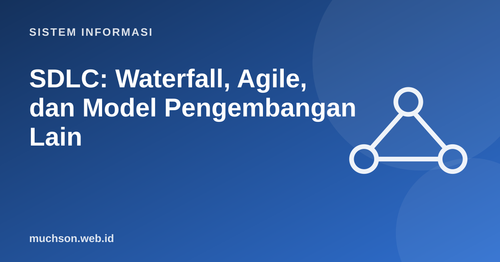

Beranda › Artikel › Sistem Informasi
Sistem InformasiSDLC: Waterfall, Agile, dan Model Pengembangan Lain
Membangun sistem informasi tanpa proses sama dengan membangun gedung tanpa denah. SDLC (Systems Development Life Cycle) menyediakan kerangka tahapan dari gagasan sampai sistem berjalan dan dipelihara. Model berbeda mengatur tahapan itu dengan cara berbeda: sekali jalan, berulang, atau bertahap.
Sebaiknya sudah paham: konsep dasar sistem informasi

Setelah membaca dan mencoba materi ini, Anda mampu:
- menyebutkan tahap-tahap SDLC dan keluaran masing-masing
- menjelaskan model waterfall, prototipe, iteratif, spiral, dan Agile
- menjelaskan Scrum: peran, kegiatan, dan artefak
- memilih model berdasarkan karakteristik proyek
- mengenali biaya perubahan di setiap tahap
Tahap umum SDLC
| Tahap | Pertanyaan utama | Keluaran umum |
|---|---|---|
| Perencanaan | Mengapa dan apakah layak? | Studi kelayakan, piagam proyek, jadwal |
| Analisis | Apa yang dibutuhkan pengguna? | Dokumen kebutuhan, DFD, use case |
| Perancangan | Bagaimana sistem akan dibangun? | Rancangan arsitektur, ERD, mockup |
| Implementasi | Bangun dan uji | Kode, hasil uji |
| Penerapan | Bagaimana pindah ke sistem baru? | Sistem berjalan, pelatihan, panduan |
| Pemeliharaan | Bagaimana tetap relevan? | Perbaikan bug, versi baru |
Biaya memperbaiki kesalahan meningkat tajam bila ditemukan terlambat. Salah memahami kebutuhan yang ditemukan setelah sistem berjalan bisa puluhan kali lebih mahal daripada ditemukan saat analisis. Inilah alasan utama kita menginvestasikan waktu di awal, dan alasan model iteratif mencari umpan balik lebih dini.
Model waterfall
Tahap berjalan berurutan; satu tahap selesai sebelum tahap berikutnya dimulai. Cocok bila kebutuhan stabil dan jelas, risikonya rendah, dan dokumentasi formal diwajibkan (misalnya proyek pemerintah atau sistem kritis dengan regulasi).
Model berulang (iteratif dan inkremental)
| Model | Gagasan | Cocok bila |
|---|---|---|
| Prototipe | Bangun contoh cepat untuk digali tanggapan pengguna, lalu disempurnakan | Kebutuhan antarmuka belum jelas |
| Inkremental | Sistem dibagi menjadi bagian yang dirilis bertahap | Ingin manfaat cepat dan risiko terkontrol |
| Spiral | Putaran perencanaan, analisis risiko, rekayasa, evaluasi (Boehm) | Proyek besar berisiko tinggi |
| Agile | Iterasi pendek, kolaborasi, respons terhadap perubahan | Kebutuhan berubah dan pengguna dapat terlibat sering |
Agile dan Scrum
Manifesto Agile (2001) menyatakan nilai: individu dan interaksi di atas proses dan alat; perangkat lunak yang berfungsi di atas dokumentasi lengkap; kolaborasi dengan pelanggan di atas negosiasi kontrak; menanggapi perubahan di atas mengikuti rencana. Butir di sebelah kanan tetap bernilai, tetapi yang di kiri lebih diutamakan.
| Unsur Scrum | Isi |
|---|---|
| Peran | Product Owner (nilai dan prioritas), Scrum Master (proses), Developers (membangun) |
| Kegiatan | Sprint, Sprint Planning, Daily Scrum, Sprint Review, Sprint Retrospective |
| Artefak | Product Backlog, Sprint Backlog, Increment |
Memilih model
Dalam praktik, banyak organisasi memakai hibrida: perencanaan dan anggaran bergaya waterfall di tingkat program, eksekusi bergaya agile di tingkat tim. "Agile" bukan berarti tanpa dokumentasi atau tanpa perencanaan, melainkan perencanaan yang disesuaikan secara terus-menerus.
1. Mengapa waterfall kurang cocok bagi aplikasi yang kebutuhannya belum jelas?
2. Sebutkan tiga peran dalam Scrum dan tugasnya.
3. Apa perbedaan iteratif dan inkremental?
4. Tentukan model untuk sistem akademik kampus baru dengan banyak pemangku kepentingan dan regulasi dikti.
- SDLC: perencanaan, analisis, perancangan, implementasi, penerapan, pemeliharaan.
- Waterfall berurutan dan rapi, tetapi kaku terhadap perubahan.
- Prototipe, inkremental, spiral, dan Agile memberi umpan balik lebih dini.
- Scrum: peran, kegiatan, dan artefak dengan sprint pendek.
- Pilih model menurut kestabilan kebutuhan, risiko, dan keterlibatan pengguna.
Tanya jawab
Mana yang paling baik, waterfall atau Agile?
Apa itu DevOps?
Apakah Agile hanya untuk perangkat lunak?
Referensi
- Agile Manifesto
- The Scrum Guide
- Ian Sommerville, Software Engineering (Pearson)
- Roger S. Pressman dan Bruce R. Maxim, Software Engineering: A Practitioner's Approach (McGraw-Hill)
- Barry Boehm, A Spiral Model of Software Development and Enhancement, IEEE Computer 21(5), 1988